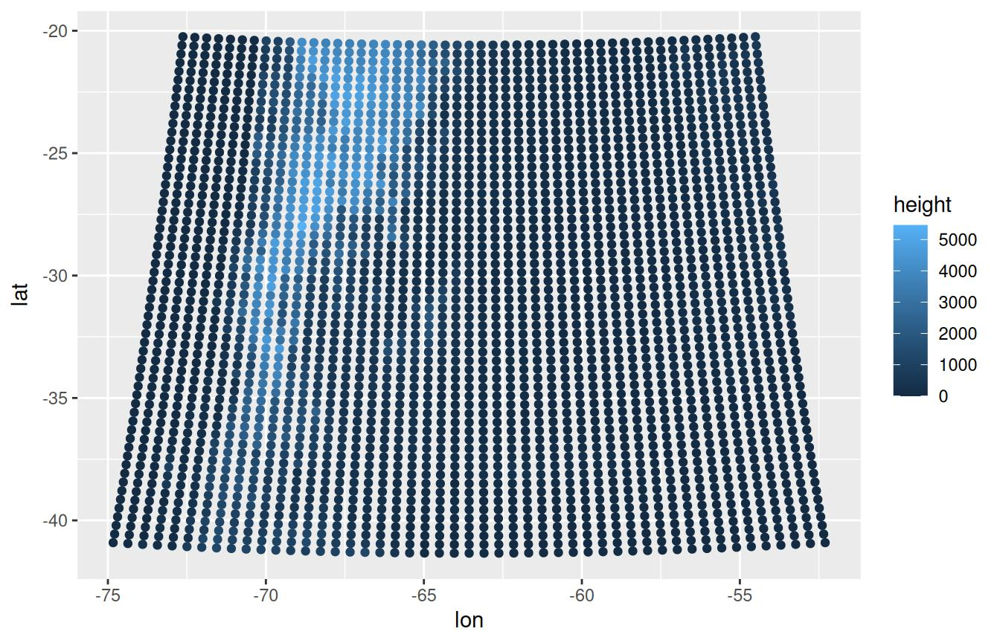
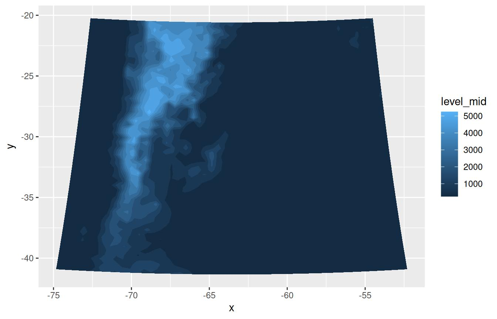
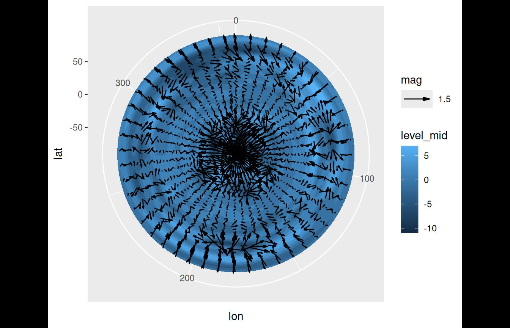
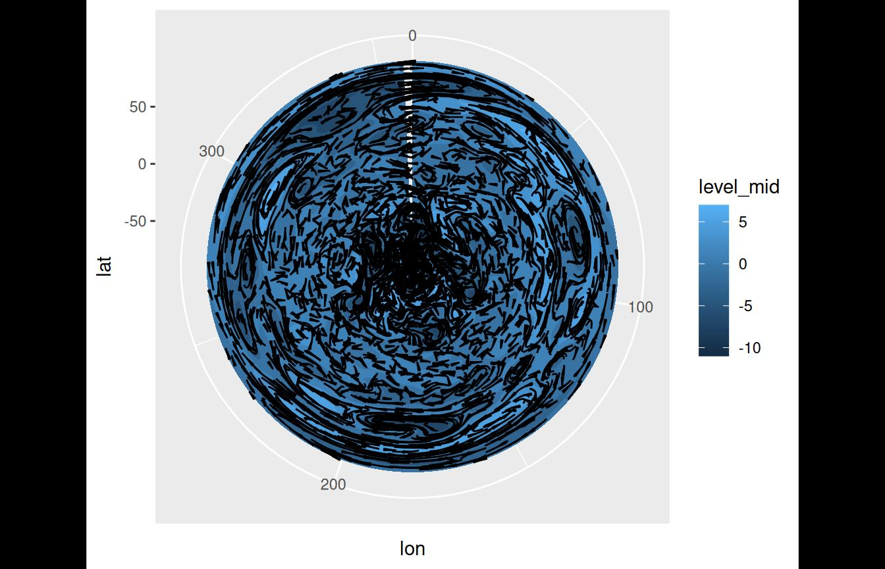
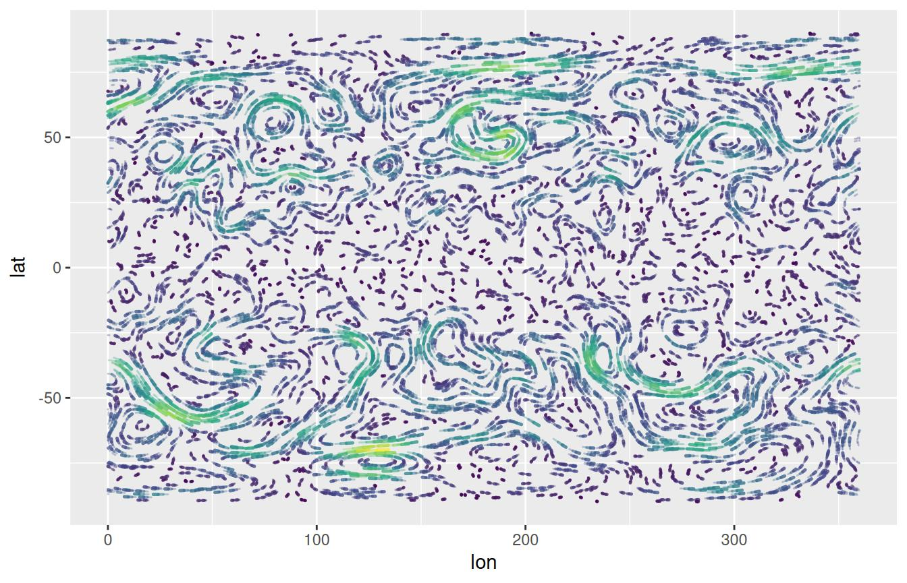
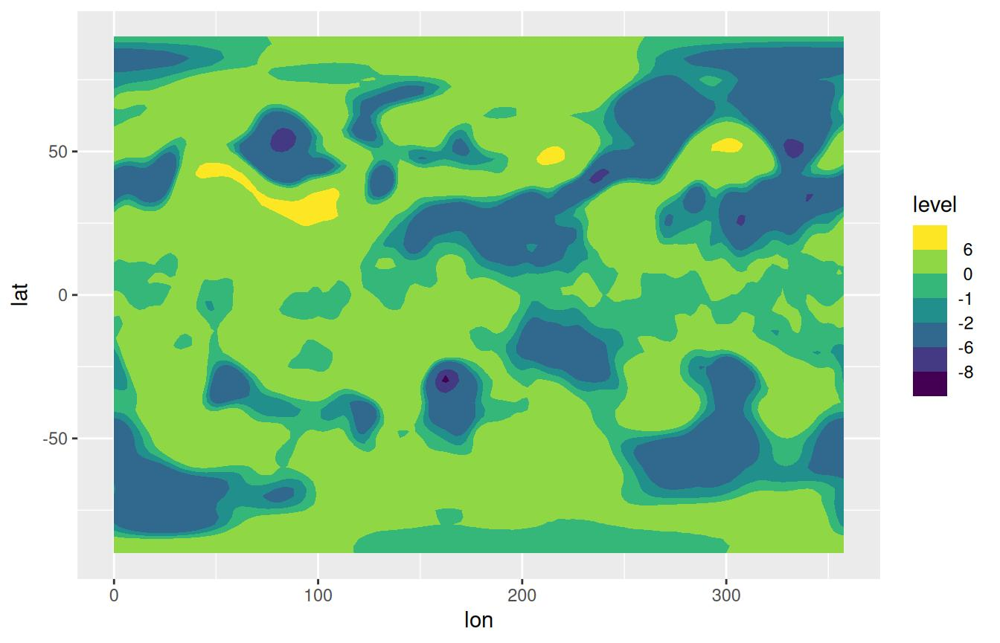

Visualization tools
Elio Campitelli
2025-09-15
Source:vignettes/Visualization-tools.Rmd
Visualization-tools.RmdOne of the “conceptual branches” of metR is the
visualization tools. These are a set of functions that
interface with ggplot2 for easier
and better plotting of meteorological (an other) fields.
# Packages and data use throught
library(metR)
library(ggplot2)
library(data.table)
temperature <- copy(temperature)
temperature[, air.z := Anomaly(air), by = .(lat, lev)]Geoms and stats
geom_contour_fill()
This geom has a bit of a long story. Before ggplot2 introduced
geom_contour_filled(), the ‘canonical’ way to get filled
contours was by using stat_contour() with a
polygon geom and mapping fill to
level (see this issue).
This was ugly and bad and didn’t work in most cases, so I threw together
some hacks to make it work, and thus
metR::geom_contour_fill() was born.
Then, Claus Wilke created {isoband}, which lead to ggplot2 finally getting a proper implementation of filled contours. Since the implementation worked much better than my Frankenstein’s monster hacks and workarounds, I decided to scrub it and adopt {isoband} as well.
So after all this history the R landscape is left with
metR::geom_contour_fill() and
ggplot2::geom_contour_filled() with almost identical
implementations. Why should you use one or the other? Why didn’t I just
deprecate this seemingly redundant function? Because, in the intervening
time metR::geom_contour_fill() has evolved and it now
provides many functionality that is missing from ggplot2’s
counterpart.
breaks can be a function.
The main control parameter of the contour family of functions it
their breaks argument, which sets the levels at which to
draw contour lines. In geom_contour_fill() this argument
can be a function that takes a binwidth and the range of the data. This
allows for great flexibility.
For example, is is very common in meteorological science to not draw
contours at the zero level. Passing MakeBreaks() as the
breaks argument allows you to control not only the
binwidth, but also which levels not to draw.
ggplot(temperature[lon %~% 180], aes(lat, lev, z = air.z)) +
geom_contour_fill(breaks = MakeBreaks(binwidth = 2, exclude = 0)) +
scale_fill_divergent(breaks = MakeBreaks(binwidth = 2, exclude = 0))
Infilling of missing values
Both geom_contour_fill() and
geom_contour_filled() will work fine with missing values,
but they will leave a somewhat ugly empty patch when they are found.
data(volcano)
volcano <- setDT(reshape2::melt(volcano))
volcano[, value.gap := value]
volcano[(Var1 - 40)^2 + (Var2 - 35)^2 < 50, value.gap := NA]
ggplot(volcano, aes(Var1, Var2, z = value.gap)) +
geom_contour_fill() 
This is an OK behaviour, but sometimes it’s more visually appealing
to fill in these missing areas. The na.fill argument allows
for some control over how this values are imputed. It can take a number,
a function function that takes the vector of values and returns one
number, or TRUE, in which case it will use
metR::Impute2D() to interpolate the missing values.
ggplot(volcano, aes(Var1, Var2, z = value.gap)) +
geom_contour_fill(na.fill = TRUE)
#> Warning: Imputing missing values.
On-the-fly projecting
Contouring only works on regular grids (although see {contoureR} for an implementation that accepts non-regular girds). Sometimes the data is regular in some coordinate system and you need to plot in another. For example, this data is not regular on a a longitude by latitude coordinate system, but it is regular on the x y coordinates which is a lambertian grid.
data(surface)
ggplot(surface, aes(lon, lat)) +
geom_point(aes(color = height))
ggplot(surface, aes(x, y)) +
geom_point(aes(color = height))
If you know the projection string, you can pass it to the
proj argument and get filled contours in longitude by
latitude space (this needs {proj4} to be
installed).
proj_string <- "+proj=lcc +lat_1=-30.9659996032715 +lat_2=-30.9659996032715 +lat_0=-30.9660034179688 +lon_0=-63.5670013427734 +a=6370000 +b=6370000"
ggplot(surface, aes(x, y)) +
geom_contour_fill(aes(z = height))
ggplot(surface, aes(x, y)) +
geom_contour_fill(aes(z = height), proj = proj_string)
You can actually pass any arbitrary function to proj. It
should take an iso object as returned by the isoband package with the
contour information and return the modified contours.
Clipping
The clip argument takes a simple feature polygon and
clips the contours to the interior of the polygon. Clipping is done
after proj is applied.
argentina <- rnaturalearth::ne_countries(country = "argentina", returnclass = "sf")
ggplot(surface, aes(x, y)) +
geom_contour_fill(aes(z = height), proj = proj_string, clip = argentina) 
On the fly kriging
If everything fails and your data is not on a regular grid on any
coordinate system, then you can use kriging to interpolate it to a
regular grid and then plot it using contours. Setting the
kriging argument toTRUE uses {kriging} to
krige (is that a verb?) the data before computing the contours.
Here, as an example, the volcano dataset is sampled and perturbed to
create a dataset of irregularly spaced points. Using kriging,
geom_contour_fill() can recover the general shape.
set.seed(42)
some_volcano <- volcano[sample(.N, .N/7)] # select 70% of the points
some_volcano[, Var1 := Var1 + rnorm(.N)] # add some random noise
some_volcano[, Var2 := Var2 + rnorm(.N)]
ggplot(some_volcano, aes(Var1, Var2)) +
geom_point(aes(color = value))
ggplot(some_volcano, aes(Var1, Var2)) +
geom_contour_fill(aes(z = value), kriging = TRUE) +
geom_point(size = 0.2)Unequal breaks between facets
ggplot2’s geom_contour_filled() computes breaks using
all the data. This is great because it means that breaks are consistent
between panels when using facet_grid(). But if you want to
compute breaks separately for each panel, you can use
geom_contour_fill()’s global.breaks
argument.
With the default, separation between levels is always the same. Good for comparison, but in this case the panel on the left lacks detail.
ggplot(temperature[lev %in% c(1000, 300)], aes(lon, lat, z = air.z)) +
geom_contour_fill() +
scale_fill_divergent() +
facet_grid(~lev)
With global.breaks = FALSE, binwidth is no longer the
same in each panel and now you can see more detail in the leftmost
panel.
ggplot(temperature[lev %in% c(1000, 300)], aes(lon, lat, z = air.z)) +
geom_contour_fill(global.breaks = FALSE) +
scale_fill_divergent() +
facet_grid(~lev)
All of these features are also available to regular contours in the
geom_contour2() function.
Computed variables
Like ggplot::geom_contour_filled(),
geom_contour_fill() computes several relevant variables.
The two most important ones are level_mid (also called
int.level for backwards compatibility reasons) and
level. The former (the default) is a numeric value that
corresponds to the midpoint of the levels while the latter is an ordered
factor that represents the range of the contour.
ggplot(temperature[lev == 300], aes(lon, lat, z = air.z)) +
geom_contour_fill()
ggplot(temperature[lev == 300], aes(lon, lat, z = air.z)) +
geom_contour_fill(aes(fill = after_stat(level)))A big difference between the two variables is that one is compatible
with continuous scales while the other only works with discrete scales.
The advantage of using level_mid is that it preserves the
actual continuous nature of the data, which allows the use of meaningful
continuous scales such as scale_fill_divergent() and
results in proper colours when breaks are not equally spaced. The
disadvantage is that the scale function has no information about the
discretisation, and thus is very hard to use synchronise the
breaks that define the levels of the contours and the breaks shown in
the color guide.
A third important computed variable is level_d, which is
identical to level but forces the scale to match the breaks
in the data automatically.
ggplot(temperature[lev == 300], aes(lon, lat, z = air.z)) +
geom_contour_fill(aes(fill = after_stat(level_d)))
See the discretised_scale section for a way of using continuous sales for discretised data.
geom_text_contour and geom_label_contour
Labelling contours is also a problematic aspect of
ggplot2. geom_text_contour() and
geom_label_contour() can be use to automatically add text
or labels to the flattest part of a contour.
ggplot(temperature[lev == 300], aes(lon, lat, z = air.z)) +
geom_contour_fill() +
geom_contour(color = "black") +
geom_text_contour() +
scale_fill_divergent() 
By default it labels every 2nd contour (this can be changed by the
skip parameter) and it rotates to follow the angle of the
contour (this is not available on geom_label_contour()).
Since in some datasets there can be very small contours that should not
be labelled for clarity, the min.size argument specifies
the minimum points a contour has to have in order to be labelled.
Notice how labels are drawn on top of contours? The problem is that
geom_contour() doesn’t know it’s being labelled;
geom_text_contour() addresses this issue by allowing you to
draw a stroke around the text.
ggplot(temperature[lev == 300], aes(lon, lat, z = air.z)) +
geom_contour_fill() +
geom_contour2(color = "black") +
geom_text_contour(stroke = 0.2) +
scale_fill_divergent() 
You can have full control over where labels are placed with the
label.placer argument. It takes a function that takes a
vector of x and y values and returns a logical vector of the same length
that indicate the points where labels should be. There are 5 build in
placement functions:
label_placer_flattest(): The default. It computes the curvature and the angle at each points and then selects the point which minimizes the sum of both numbers. Therefore, it tries to label the flattest and most horizontal part of the contour.label_placer_fraction(): It takes a vector of numbers ranging from 0 to 1 representing where tu put the label in relation to the length of the contour. That is, using 0.5 means to put the label at the midpoint.label_placer_n(): Placesnlabels approximately equally spaced along the contour.label_placer_random(): It puts the label in random places. ¯\_(ツ)_/¯ .label_placer_all(): It puts the label at every point. Probably is best not to use it.
ggplot(temperature[lev == 300], aes(lon, lat, z = air.z)) +
geom_contour_fill() +
geom_contour2(color = "black") +
geom_text_contour(stroke = 0.2, label.placer = label_placer_random()) +
scale_fill_divergent() 
geom_contour_tanaka
Illuminated contours (aka Tanaka contours) use varying brightness and width to create an illusion of relief. This can help distinguishing between concave and convex areas (local minimums and maximums), specially in black and white plots. It also allows for photocopy safe plots with divergent colour palettes, and it just looks cool.
ggplot(temperature[lev == 300], aes(lon, lat, z = air.z)) +
geom_contour_fill() +
geom_contour_tanaka() +
scale_fill_divergent()
stat_subset
metR also has stat_subset() which makes a
subset of the data according to the subset aesthetic. This
makes it possible to show only part of the data in one geom without
needing to specify a data argument (specially useful if the
data being plotted is the result of a long pipe and not actually
assigned to a data.frame). It has a somewhat limited use in
that it cannot perform further statistical transformations of the
data.
For example, it can be used if you have a correlation field and want to mark only the points with significant correlations:
data(geopotential) # geopotential height at 700hPa for the Southern Hemisphere.
ggplot(geopotential[, gh.base := gh[lon == 120 & lat == -50], by = date][
, .(correlation = cor(gh.base, gh)),
by = .(lon, lat)],
aes(lon, lat, z = correlation)) +
geom_contour_fill(breaks = MakeBreaks(0.1)) +
stat_subset(aes(subset = correlation > 0.5),
geom = "point", size = 0.1) +
scale_fill_divergent() 
Another possible use it to quickly mask missing values.
ggplot(volcano, aes(Var1, Var2, z = value.gap)) +
geom_contour_fill(na.fill = TRUE) +
stat_subset(aes(subset = is.na(value.gap)), geom = "raster",
fill = "#a56de2")geom_vector and geom_arrow
Plotting arrows can be a pain. Again, the ‘canonical’ way of plotting
vectors is to use geom_segment() and specify
x, y, xend and yend
aesthetics which can be a lot of typing when one has the data on
location and displacement (or velocity). Instead, metR‘s
geom_vector() and geom_arrow() draw vectors
defined by their lateral displacements (dx, dy) or their magnitude and
angle. It also has some useful parameters like min.mag,
which controls the minimum magnitude for an arrow to be drawn (useful
for highlighting only areas of strong ’flow’) and skip,
which draws only the nth arrow in the x and y directions.
Both geoms are essentially the same, except that
geom_arrow() defaults to preserving direction in coordinate
transformations and regardless of the plot aspect ratio. This is
recommended if the arrows are meant to convey the direction of the flow
in each point instead of being a description of the shape of the flow
related to the plot coordinates.
So, as an example, we can plot the temperature gradient like this:
temperature[, c("t.dx", "t.dy") := Derivate(air.z ~ lon + lat,
cyclical = c(TRUE, FALSE)),
by = lev]
(g <- ggplot(temperature[lev == 500], aes(lon, lat)) +
geom_contour_fill(aes(z = air.z)) +
geom_vector(aes(dx = t.dx, dy = t.dy), skip.x = 2,
skip.y = 1) +
scale_mag())
In the above example, t.dx and t.dy represent displacements in the
same units as the x and y dimension, so using geom_vector()
each arrow points perpendicular to the contours even if we change the
coordinate system.
g + coord_polar()
But if we want to plot how the (horizontal) direction changes with
height it makes more sense to use geom_arrow() (or
geom_vector(preserve.dir = TRUE))
ggplot(temperature[lon %between% c(100, 200) & lat == -50], aes(lon, lev)) +
geom_arrow(aes(dx = dx(t.dx, lat), dy = dy(t.dy)), skip = 1) +
scale_y_level() +
scale_mag()
In this case, an arrow at a 45° angle represents temperature gradient
from the Southwest regardless of the x and y
scales.
The start and direction arguments adjust
the behaviour of the arrows. This is useful for working with winds in
the meteorological standard (in which 0° means wind from the North and
90° means wind from the East).
geom_streamline
Streamlines are paths tangential to a vector field and provide an
intuitive way of visualizing vector fields.
geom_streamline() computes streamlines via Euler
integration.
(g <- ggplot(temperature[lev == 500], aes(lon, lat)) +
geom_contour_fill(aes(z = air.z)) +
geom_streamline(aes(dx = t.dy, dy = -t.dx), L = 10, res = 2,
arrow.length = 0.3, xwrap = c(0, 360)))
There are several parameters that control the feel of the result.
L and res control the length and resolution,
while the skip parameters change the amount of the
streamlines. More in depth control over the simulation can be
accomplished by the S and dt parameters.
Since streamlines imply a tight relationship between the vector field
and the spatial dimensions, it’s important that their units are
compatible. A wind field in m/s in a longitude-latitude grid should
first be converted into degrees/s. The functions dlon() and
dlat() are an easy way of doing this. This tight coupling
also means that they are robust to coordinate transformations.
g + coord_polar()
stat_streamline() computes three useful variables.
step is the integration step, and dx and
dy are the components of the vector field at each point.
They can be used to visualize information about the field in each point,
and to give a sense of direction without arrows.
ggplot(temperature[lev == 500], aes(lon, lat)) +
geom_streamline(aes(dx = t.dy, dy = -t.dx, size = after_stat(step),
alpha = after_stat(step),
color = after_stat(sqrt(dx^2 + dy^2))), arrow = NULL,
L = 10, res = 2, xwrap = c(0, 360), lineend = "round") +
scale_color_viridis_c(guide = "none") +
scale_size(range = c(0, 1), guide = "none") +
scale_alpha(guide = "none")
#> Warning: Using `size` aesthetic for lines was deprecated in ggplot2 3.4.0.
#> ℹ Please use `linewidth` instead.
#> This warning is displayed once every 8 hours.
#> Call `lifecycle::last_lifecycle_warnings()` to see where this warning was
#> generated.
Scales
discretised_scale()
The use of geom_contour() and
geom_contour_fill() generates a problem because those geoms
implicitly discretise a continuous variable, but it’s hard to
communicate that discretisation to the colour scale. In particular, it
would be handy to show a discretised version of the colour scale in
which the values labelled are in sync with the contour levels.
One way of achieving this is to use the level stat,
which –as discussed previously– is a discrete variable. With that, one
can use ggplot2::guide_colorsteps() to get a nice looking
guide.
ggplot(temperature[lev == 300], aes(lon, lat, z = air.z)) +
geom_contour_fill(aes(fill = after_stat(level)), breaks = c(-10, -8, -6, -2, -1, 0, 6, 8, 10)) +
guides(fill = guide_colorsteps())
This can work, but this example shows its limitations. Since the scale has no real understanding of the underlying numbers, breaks and colours are always distributed evenly even when they shouldn’t. For the same reason it’s also not possible to use diverging colour scales with a set midpoint.
For that, the solution is to use
scale_fill_discretised():
ggplot(temperature[lev == 300], aes(lon, lat, z = air.z)) +
geom_contour_fill(aes(fill = after_stat(level)), breaks = c(-10, -8, -6, -2, -1, 0, 6, 8, 10)) +
scale_fill_discretised()This type of scale understand discrete values that have an underlying continuous nature. This means that the scale can be modified by referencing the continuous values. For example, using a divergent scale and setting the midpoint.
ggplot(temperature[lev == 300], aes(lon, lat, z = air.z)) +
geom_contour_fill(aes(fill = after_stat(level)), breaks = c(-10, -8, -6, -2, -1, 0, 6, 8, 10)) +
scale_fill_divergent_discretised(midpoint = 3)Other scales
Many meteorological fields are defined in a longitude×latitude×level
grid, so metR includes scales for each dimension. These are
glorified wrappers around scale_*_continuous() with
sensible defaults and, in the case of scale_*_level(), the
implementation of reverselog_trans().
There are also scale_color_divergent() and
scale_fill_divergent() which are wrappers around
scale_*_gradient2() but with sane default colours for
positive and negative values –particularly useful for plotting anomaly
values.
To see how this scales work, let’s visualize the vertical distribution of temperature anomalies from the zonal mean.
# Plot made with base ggplot
(g <- ggplot(temperature[lon %~% 180], aes(lat, lev, z = air.z)) +
geom_contour2(aes(color = after_stat(level))))While this is fine, since pressure levels are roughly proportional to
in meteorology we usually plot the vertical coordinate as
.
However, while ggplot2 has scale_y_log10() and
scale_y_reverse(), they don’t work together.
metR defines the new transformation
reverselog_trans() that can be used with any scale but that
is the default for scale_*_level().
On the other hand, scale_*_latitude() (and
scale_*_longitude()) not only defaults expand
to c(0, 0), but also has a ticks argument that
specifies the spacing of breaks between -90 and 90 in the case of
scale_*_latitude(), and between 0 and 360 in the case of
scale_*_longitude().
These scales default to printing no label, since usually the dimensions are understood by the shape of the plot.
g +
scale_y_level() +
scale_x_latitude(ticks = 15, limits = c(-90, 90)) +
scale_color_divergent()Note: scale_*_longitude() (currently) assumes the data
goes from 0° to 360° but puts labels between -180° and 180°. This very
idiosyncratic choice stems from the fact that model output is usually in
the [0; 360) range but it’s easier to read maps in the (-180; 180]
range. This may change in the future.
Other goodies
geom_relief
This geom produces a shaded relief of the data. It doesn’t really map the data per se, but it provides an intuitive representation of hills and valleys that can be used as a background for plotting actual data.
ggplot(volcano, aes(Var1, Var2)) +
geom_relief(aes(z = value))